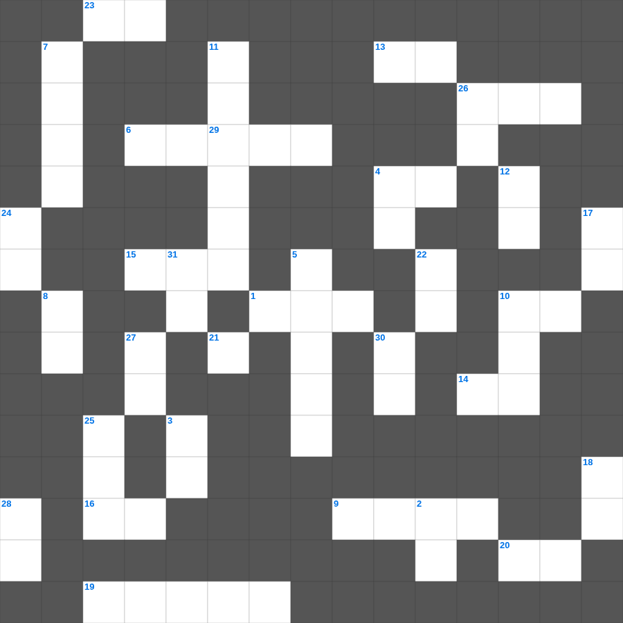

요한복음 마스터 100 (1/2)
📌 서비스 정의
십자가로세로는 교회 주보와 주일학교에서 사용할 수 있는 성경 기반 가로세로 퍼즐 서비스입니다. 성경 인물, 사건, 핵심 구절을 바탕으로 제작되었습니다. 온라인 풀이 및 인쇄 기능을 제공합니다.
📖 요한복음란?
요한복음은 예수 그리스도를 하나님의 아들이자 생명의 주로 소개합니다. 표적과 말씀을 통해 믿음으로 영생을 얻게 하는 목적이 밝혀져 있으며, 사랑과 진리의 메시지가 두드러집니다. 총 21장입니다.
📚 요한복음의 주요 사건·주제
말씀이 육신이 되심(요한복음 1장) · 물로 포도주를 만든 첫 표적 · 니고데모와의 대화(요 3장) · 최후의 만찬과 다락방 강화 · 십자가, 부활, 도마의 신앙고백
무료로 즐기는 요한복음 요한복음 성경 퀴즈 문제! 35개의 힌트로 구성된 가로세로 낱말 퍼즐입니다. PC와 모바일 모두 지원되며, 정답을 바로 확인할 수 있어 혼자서도 쉽게 풀 수 있습니다.

📝 가로 힌트
1. 보좌에서 흘러나오는 수정 같이 맑은 이것의 강
2. 예수께서 마태의 집에서 앉아 음식을 잡수실 때에 많은 이것와 죄인들이 와서
4. 믿고 세례를 받는 사람은 이것을 얻을 것이요 믿지 않는 사람은 정죄를 받으리라
6. 백성들이 율법을 깨닫도록 도와준 사람들
9. 남유다 최악의 왕이었으나 바벨론 포로 중 회개하여 회복된 왕
10. 시온의 딸아 크게 기뻐할지어다... 보라 네 왕이 네게 임하시나니 그는 공의로우시며 구원을 베푸시며 겸손하여서 이것을 타시나니
13. 길에서 새의 보금자리를 보면 이것은 놓아주라
14. 베드로전서의 주요 수신지 중 하나 (2글자)
15. 아모스의 이름 뜻
16. 성령이 친히 우리의 영과 더불어 우리가 하나님의 이것인 것을 증언하시나니
19. 아간과 그 가족들이 심판받은 골짜기
20. 나의 형제들아 주 안에서 이것하라 너희에게 같은 말을 쓰는 것이 내게는 수고로움이 없고 너희에게는 안전하니라
23. 에스겔이 예언한 새 성전의 법도 핵심은 '이것'이다
26. 사랑하는 자들아 거류민과 이것 같은 너희를 권하노니 영혼을 거슬러 싸우는 육체의 정욕을 제어하라
📝 세로 힌트
2. 여호수아의 고별 설교가 행해진 곳
3. 너희는 그 은혜에 의하여 이것으로 말미암아 구원을 받았으니 이것은 너희에게서 난 것이 아니요 하나님의 선물이라
4. 여호와는 나의 빛이요 나의 이것이시니 내가 누구를 두려워하리요
5. 베드로후서 1장 3절: 우리를 부르신 이를 앎으로 말미암아 무엇을 주셨나
7. 죽은 형의 이름을 잇게 하는 제도
8. 나훔 1:3, 여호와는 노하기를 이것하시며
10. 순종할 때의 복 '들어가도 복을 받고 이것도 복을 받음'
11. 요한이서 1장 5절: 처음부터 가진 계명
12. 나무에 달린 자는 하나님께 이것을 받았음이니라
17. 에스라가 모든 귀환자에게 예루살렘으로 모이라고 정한 기한
18. 이 사람들은 원망하는 자며 불만을 토하는 자며 그 이것대로 행하는 자라
21. 불순종의 결과 '네 하늘은 놋이 되고 네 땅은 이것이 될 것이며'
22. 사람이 떡으로만 사는 것이 아니요 여호와의 입에서 나오는 이것으로 삶
24. 나는 비천에 처할 줄도 알고 이것에 처할 줄도 알아 모든 일 곧 배부름과 배고픔과 풍부와 궁핍에도 처할 줄 아는 일체의 비결을 배웠노라
25. 그들은 패역한 족속이라 그들이 듣든지 아니 듣든지 그들 가운데에 이것이 있음을 알지니라
26. 베드로후서 1장 11절: 우리 주 구주 예수 그리스도의 영원한 이것에 들어감을 넉넉히 주시리라
27. 포도나무가 다른 나무보다 나은 것이 무엇이랴... 그것을 가지고 무엇을 이것을 만들 수 있겠느냐
28. 그는 허물과 죄로 이것던 너희를 살리셨도다
29. 누가 우리를 그리스도의 이것에서 끊으리요 환난이나 곤고나 박해나 기근이나...
30. 깊도다 하나님의 이것과 지식의 풍성함이여, 그의 판단은 측량하지 못할 것이며
🧩 이 퍼즐에서 배우는 내용
이 퍼즐은 요한복음 마스터 100 (1/2)의 핵심 단어와 개념을 자연스럽게 복습할 수 있도록 구성되었습니다. 주일학교 수업이나 개인 성경공부에서 학습 내용을 점검하는 용도로 바로 활용할 수 있습니다.
🧑🏫 교회 교육 자료 활용
이 퍼즐은 주일학교 교재 추천 자료로 활용할 수 있고, 주일학교 주보에 넣기 좋은 분량으로 구성되어 있습니다. 수업용 주일학교 교안에 활동지로 붙이거나, 예배 후 복습용 주일학교 공과교재로 바로 사용할 수 있습니다.
🏷️ 키워드
요한복음 성경 퀴즈 문제, 요한복음, 십자가로세로, 성경퀴즈, 말씀퀴즈, 가로세로퍼즐, 주일학교 교재 추천, 주일학교 주보, 주일학교 교안, 주일학교 공과교재